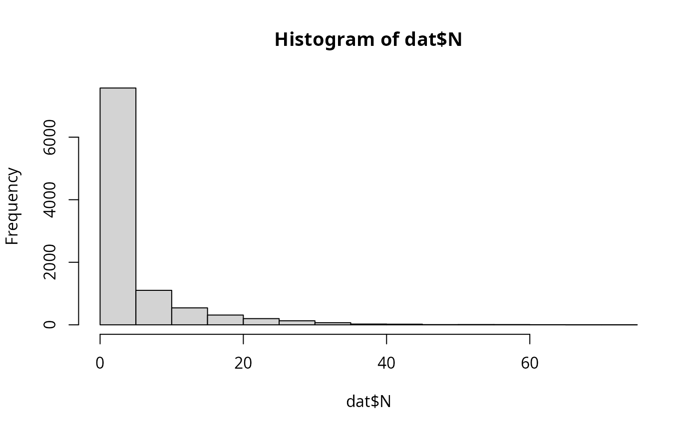

Contamination of cantaloupe rind from soil and irrigation water
Source:R/caPrimaryProduction.R
caPrimaryProduction.RdcaPrimaryProduction() is a function that assesses the contamination of cantaloupes through soil and irrigation water.
It considers soil and water contamination characteristics such as prevalence (pSoil and pIrrig)
and distributions of L. monocytogenes concentration in soil (cSoilLogMin, cSoilLogMode and cSoilLogMax
and water (cIrrigLogMin and cIrrigLogMax) as inputs.
pSoil and pIrrig have to be chosen by the user according to existing data of prevalence; whereas pSoil is conditional to several risk factors.
The identified risk factors (Background2022qraLm) are:
irrigation in the previous days before harvesting; and
the use of organic fertilizer
which affect pSoil as associated odds-ratios (F_irrig_rain and fManure). In this context, the user has to define the proportion of fields
practicing irrigation prior to harvest or undergoing rain (p_irrig_rain), and the proportion of fields using organic amendments (pManure).
Default values for c_soil and c_irrig have been proposed based on Background2022;textualqraLm. c_irrig is
conditional to water sources contaminated with L. monocytogenes.
Usage
caPrimaryProduction(
nLots,
sizeLot,
cantaWeight = 1000,
pSoil = 0.089,
pManure = 0.5,
fManure = 7,
cSoilLogMin = -1,
cSoilLogMode = 0.6,
cSoilLogMax = 1.48,
qSoilMin = 0.05,
qSoilMode = 0.5,
qSoilMax = 5,
pFoil = 0.5,
rFoil = 0.9,
fIrrigRaining = 25,
pIrrigRaining = 0.1,
pIrrig = 0.131,
cIrrigLogMin = -1.52,
cIrrigLogMax = 1.04,
pWaterGainMin = 0,
pWaterGainMax = 0.004
)Arguments
- nLots
Size of the Monte Carlo simulation (scalar).
- sizeLot
Number of cantaloupes per cultivation lot or field (scalar).
- cantaWeight
(
g) weight of a cantaloupe- pSoil
Prevalence of contamination of soil (provided by the user,
default=0.089according to Strawn2013a;textualqraLm).- pManure
Proportion of fields using organic amendments (provided by user,
default=0.5)- fManure
Odds-ratio estimate associated to use or organic amendment in soil (
default=7.0according to Strawn2013b;textualqraLm).- cSoilLogMin
(
log10 CFU/g) Minimum value of the triangular distribution describing variability of concentration (according to Dowe1997;textualqraLm:default=-1log10\ CFU/g).- cSoilLogMode
(
log10 CFU/g) Mode value of the triangular distribution describing variability of concentration (according to Dowe1997;textualqraLm:default=0.6log10\ CFU/g).- cSoilLogMax
(
log10 CFU/g) Maximum value of the triangular distribution describing variability of concentration (according to Dowe1997;textualqraLm:default=1.48log10\ CFU/g).- qSoilMin
(
g) Minimum value of the triangular distribution describing variability of quantity of soil deposited on cantaloupe (default=0.05g).- qSoilMode
(
g) Mode value of the triangular distribution describing variability of quantity of soil deposited on cantaloupe (default=0.5g).- qSoilMax
(
g) Maximum value of the triangular distribution describing variability of quantity of soil deposited on cantaloupe (default=5g).- pFoil
Proportion of fields grown in foil (e.g. plastic mulch) (
default=0.5).- rFoil
Reduction fraction of the quantity of soil transferred to rind (
default=default EKE: 0.9).- fIrrigRaining
Odds-ratio estimate associated to use of irrigation and raining events up to
2days before harvest (default=25.0according to Weller2015;textualqraLm).- pIrrigRaining
Proportion of fields that undergo irrigation or raining just previous harvest (provided by user,
default=0.1).- pIrrig
prevalence of contamination in irrigation water (provided by the user,
default=0.131according to Raschle2021;textualqraLm)- cIrrigLogMin
(
log CFU/L) min value of the uniform distribution (provided by the user,default=-1.52according to Sharma2020;textualqraLm)- cIrrigLogMax
(
log CFU/L) max value of the uniform distribution (provided by the user,default=1.04according to Sharma2020;textualqraLm)- pWaterGainMin
minimum value of the fraction of water gain (
ml) relative to the cantaloupe weight ing(default=0.0)- pWaterGainMax
maximum value of the fraction of water gain (
ml) relative to the cantaloupe weight ing(default=0.004according to Richards2004;textualqraLm)
Value
A list of two elements:
N(
CFU) A matrix of sizenLotsbysizeLotcontaining the numbers of L. monocytogenes cells on cantaloupe at harvest;PPrevalence of field lots of cantaloupes contaminated with L. monocytogenes cells at harvest (scalar).
Note
The prevalence in soil, pSoil, must be provided by the user according to existing data. Background2022;textualqraLm lists various prevalence
estimates in different regions of the world. A default value of 0.089 Strawn2013aqraLm is taken.
pSoil is conditional to several risk factors; yet this functions is based upon two risk factors:
irrigation or rain occurring prior to harvesting, whose odds-ratio has been estimated at
25.0when taking place24hours before harvesting Weller2015qraLm; andapplication of organic fertilizer, whose odds-ratio has been estimated at
7.0when manure is applied within1year Strawn2013bqraLm.
The distribution about the concentration of L. monocytogenes in soil is represented as a triangular distribution, using data from
Dowe1997;textualqraLm, who reported a mean of 4.0 MPN L. monocytogenes \ g soil, with a 95% confidence interval of <1.0-28 MPN/g.
Background2022;textualqraLm lists many estimates of L. monocytogenes in water environments.
The estimate of 0.131 provided by Raschle2021;textualqraLm has been chosen as default.
The distribution about the concentration of L. monocytogenes in irrigation water is represented as a uniform distribution,
using the minimum and maximum values from Sharma2020;textualqraLm, who reported <0.03 to 11 MPN L. monocytogenes / L water.
The algorithm assumes that the amount of water deposited on the cantaloupe rind after the last irrigation is as a percentage of the cantaloupe weight,
and is sampled from a uniform distribution of parameters between a minimum value of zero and a maximum value of 0.004, taken from Richards2004;textualqraLm.
References
statsqraLm mc2dqraLm Background2022qraLm Dowe1997qraLm Raschle2021qraLm Richards2004qraLm Sharma2020qraLm Strawn2013aqraLm Strawn2013bqraLm Weller2015qraLm
See also
Other data generation:
Lot2LotGen(),
LotGen()
Examples
dat <- caPrimaryProduction(
nLots = 100,
sizeLot = 100,
cantaWeight = 800,
pSoil = 0.089,
pManure = 0.1,
pIrrigRaining = 0.05,
pFoil = 0.5,
rFoil = 0.75,
pIrrig = 0.131
)
hist(dat$N)
